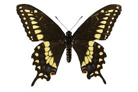

Butterflies (and moths) are the only group of insects that have scales covering their wings, although some butterflies have reduced scales. They differ from other insects also by their ability to coil up their probo . Caterpillars are the names given to the larvae of both butterflies and moths
ButterfliesNumbers of species. Due to their bright colors and visits to flowers, butterflies are the most familiar insects to humans . There are about 17,500 species of butterflies in the world, and around 750 species in the United States. Distinctive characteristics. Butterflies (and moths) are the only group of insects that have scales covering their wings, although some butterflies have reduced scales. They differ from other insects also by their ability to coil up their proboscis. Immatures. Caterpillars are the names given to the larvae of both butterflies and moths. They are usually very distinctive, and in some cases may be identified more easily than the adults. When they are developing, their skin may be shed four or more times, with each molt often changing the coloration and appearance of the caterpillar. They eat voraciously to transform plant material into tissues that they will need for metamorphosis. Plant associations. Butterflies are commonly associated with plants, and the relationship is sometimes complex. Immatures, with few exceptions, eat plants, and therefore may be considered harmful to the plants. However, butterflies are very important to many plants that are dependent upon flower-visiting insects for cross-pollination. Most butterfly caterpillars eat one, or sometimes several, related species of plants. Usually the choice is made by the adult female when depositing eggs. Adults usually feed on nectar from flowers of plants, although many butterflies feed instead on rotting fruit, dung, etc., especially in the tropics. Migration. Butterfly migration is best exemplified by the Monarch, which is widely known to migrate in the fall to overwintering sites in California and Mexico. But in the United States, several other butterfly species engage in lesser migration distances. Some of these are the Buckeye, the Painted Lady, the Purple Wing, the Great Southern White, the Cloudless Sulphur, and the Little Sulphur. Wing colors in butterflies appear in two types, pigment and structural, frequently combined in one individual. Pigment colors are familiar in paints, dyes, and inks, and are defined as specific substances with definite chemical composition. Structural colors are instead produced in a physical manner, similar to a rainbow. Morpho butterflies are the usual example of butterflies with structural color. Vision. The vision of butterflies appears to be excellent , especially within short distances. They are able to fly with precision in areas of many obstacles. Mating Behavior. Females are usually able to engage in mating on the day of emergence, but males do not normally mate for several days. Courtship rituals vary widely among species. Classification. Butterflies are currently, with some arguments, placed into the following six families: Hesperiidae. Known as "Skippers," containing relatively small, fast-flying species. About 3,000 worldwide species. Lycaenidae. Blues, Hairstreaks and Coppers. Colors and patterns of sexes often differ. Over 5,000 world species. Nymphalidae. Known as "Brush-footed" butterflies, contains many subfamilies. There are some 5,000 worldwide species. Papilionidae. Known as "Swallowtail, butterflies, most species have prominent "tails." Some 600 species in the world. Pieridae. Known as "Yellows and Whites, they have those colors predominantly. More than 1,000 worldwide species. Riodinidae . Known as metalmarks, are sometimes placed in the Family Lycaenidae. About 1,000 species in the world.